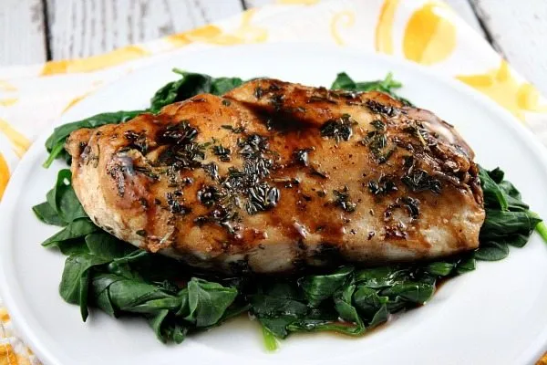

Balsamic Glazed Chicken

Description
Delicious chicken that is perfect for a weeknight dinner, a family gathering, or a 3rd date ;) Just don't undercook it
Ingredients
- 1/2 cup balasamic vinegar
- 2 tbsp honey
- 1.5 tbsp whole-grain mustard
- 3 garlic cloves, minced
- kosher salt
- freshly ground black pepper
- 4 bone-in, skin-on chicken thighs
- 2 cup baby red potatoes, halved (quartered if large)
- 2 tbsp sprigs fresh rosemary, plus 1 tbsp chopped
- 2 tbsp extra-virgin olive oil, divided
Steps
- Preheat oven to 425°. In a large bowl, combine balsamic vinegar, honey, mustard, and garlic and season with salt and pepper. Whisk until combined. Add chicken thighs and toss until fully coated. Transfer to the fridge to marinate, at least 20 minutes and up to 1 hour.
- Meanwhile, prep potatoes: In a medium bowl, add potatoes and chopped rosemary and season with salt and pepper. Add 1 tablespoon oil and toss until combined. Set aside.
- In a large ovenproof skillet over medium-high heat, heat remaining tablespoon oil. Add chicken and sear, skin side down, 2 minutes, then flip and sear 2 minutes more. Add potatoes, nestling them between chicken, and top with rosemary sprigs.
- Transfer to the oven and bake until potatoes are tender and chicken is cooked through, 20 minutes. (If potatoes need longer to cook, transfer chicken to a cutting board to rest and continue cooking potatoes until tender.)
- Serve chicken and potatoes with pan drippings.